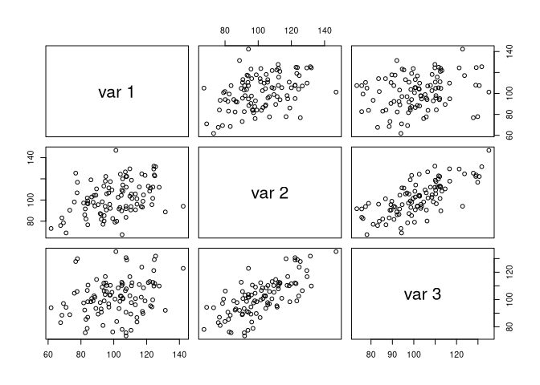

Main functions
library(jeksterslabRdata)
univ()
Generates an n x 1 univariate data vector or a list of n x 1 univariate data vectors of length R. The default data generating function is the normal distribution.
Single Random Data Set
Run the function.
Explore the output.
str(x, list.len = 6) #> num [1:100] 98 102.7 77.3 94.1 74.9 ... hist(x, main = expression(italic(N)(list(mu == 100, sigma^2 == 225))))

Multiple Random Data Sets
Run the function.
Explore the output.
str(xstar, list.len = 6) #> List of 100 #> $ : num [1:100] 76.1 64.4 70.8 85.5 96.1 ... #> $ : num [1:100] 104 103 105 118 103 ... #> $ : num [1:100] 83.7 85.6 110.2 138.9 82.9 ... #> $ : num [1:100] 94.8 84.8 108 111.2 102.8 ... #> $ : num [1:100] 83.7 86.1 105.7 103.8 81.7 ... #> $ : num [1:100] 84.1 121.3 92.5 65.2 90.1 ... #> [list output truncated]
mvn()
Generates an n x k multivariate data matrix or a list of n x k multivariate data matrices of length R from the multivariate normal distribution. This function is a wrapper around MASS::mvrnorm().
Single Random Data Set
Set mu and Sigma.
mu <- c(100, 100, 100) Sigma <- matrix( data = c(225, 112.50, 56.25, 112.5, 225, 112.5, 56.25, 112.50, 225), ncol = 3 )
Run the function.
X <- mvn(n = 100, mu = mu, Sigma = Sigma)
Explore the output.
str(X) #> num [1:100, 1:3] 120 106 140 102 106 ... #> - attr(*, "dimnames")=List of 2 #> ..$ : NULL #> ..$ : NULL pairs(X)

colMeans(X) #> [1] 99.91708 100.82996 101.02465 cov(X) #> [,1] [,2] [,3] #> [1,] 209.14395 117.7676 34.83066 #> [2,] 117.76760 261.4312 99.70080 #> [3,] 34.83066 99.7008 212.59476 cor(X) #> [,1] [,2] [,3] #> [1,] 1.0000000 0.5036449 0.1651820 #> [2,] 0.5036449 1.0000000 0.4229058 #> [3,] 0.1651820 0.4229058 1.0000000
Multiple Random Data Sets
Run the function.
Xstar <- mvn(n = 100, mu = mu, Sigma = Sigma, R = 100)
Explore the output.
str(Xstar, list.len = 6) #> List of 100 #> $ : num [1:100, 1:3] 122.7 102.1 114.4 98 92.3 ... #> ..- attr(*, "dimnames")=List of 2 #> .. ..$ : NULL #> .. ..$ : NULL #> $ : num [1:100, 1:3] 92.3 74.1 111.6 92.8 95.2 ... #> ..- attr(*, "dimnames")=List of 2 #> .. ..$ : NULL #> .. ..$ : NULL #> $ : num [1:100, 1:3] 99.6 97.9 117.4 119.6 71.2 ... #> ..- attr(*, "dimnames")=List of 2 #> .. ..$ : NULL #> .. ..$ : NULL #> $ : num [1:100, 1:3] 114.7 101.7 97.6 110.3 106.8 ... #> ..- attr(*, "dimnames")=List of 2 #> .. ..$ : NULL #> .. ..$ : NULL #> $ : num [1:100, 1:3] 102.6 88.1 118.4 96.6 89.3 ... #> ..- attr(*, "dimnames")=List of 2 #> .. ..$ : NULL #> .. ..$ : NULL #> $ : num [1:100, 1:3] 93.2 104.3 121.5 81.6 117.2 ... #> ..- attr(*, "dimnames")=List of 2 #> .. ..$ : NULL #> .. ..$ : NULL #> [list output truncated]
mvnram()
Generates an n x k multivariate data matrix or a list of n x k multivariate data matrices of length R from the multivariate normal distribution. The model-implied matrices used to generate data is derived from the Reticular Action Model (RAM) Matrices.
Single Random Data Set
Set matrices.
mu <- c(100, 100, 100) A <- matrix( data = c(0, sqrt(0.26), 0, 0, 0, sqrt(0.26), 0, 0, 0), ncol = 3 ) S <- diag(c(225, 166.5, 116.5)) F <- I <- diag(3)
Run the function.
X <- mvnram(n = 100, mu = mu, A = A, S = S, F = F, I = I)
Explore the output.
str(X) #> num [1:100, 1:3] 77.6 92.3 83.1 124.4 77.8 ... #> - attr(*, "dimnames")=List of 2 #> ..$ : NULL #> ..$ : NULL pairs(X)

colMeans(X) #> [1] 100.9830 101.7738 101.8031 cov(X) #> [,1] [,2] [,3] #> [1,] 264.35803 101.7747 54.38281 #> [2,] 101.77473 253.4147 155.28090 #> [3,] 54.38281 155.2809 184.37269 cor(X) #> [,1] [,2] [,3] #> [1,] 1.0000000 0.3932130 0.2463299 #> [2,] 0.3932130 1.0000000 0.7183794 #> [3,] 0.2463299 0.7183794 1.0000000
Multiple Random Data Sets
Run the function.
Xstar <- mvnram(n = 100, mu = mu, A = A, S = S, F = F, I = I, R = 100)
Explore the output.
str(Xstar, list.len = 6) #> List of 100 #> $ : num [1:100, 1:3] 104.3 97.5 96.9 86.9 121.3 ... #> ..- attr(*, "dimnames")=List of 2 #> .. ..$ : NULL #> .. ..$ : NULL #> $ : num [1:100, 1:3] 93.9 127.7 115.6 119.8 120.2 ... #> ..- attr(*, "dimnames")=List of 2 #> .. ..$ : NULL #> .. ..$ : NULL #> $ : num [1:100, 1:3] 106.6 117.8 123.2 69.9 87.6 ... #> ..- attr(*, "dimnames")=List of 2 #> .. ..$ : NULL #> .. ..$ : NULL #> $ : num [1:100, 1:3] 97.7 89.7 108 104.4 91.2 ... #> ..- attr(*, "dimnames")=List of 2 #> .. ..$ : NULL #> .. ..$ : NULL #> $ : num [1:100, 1:3] 123.7 99.7 103.5 116.9 115.3 ... #> ..- attr(*, "dimnames")=List of 2 #> .. ..$ : NULL #> .. ..$ : NULL #> $ : num [1:100, 1:3] 113.8 107.4 93.3 76.1 106.4 ... #> ..- attr(*, "dimnames")=List of 2 #> .. ..$ : NULL #> .. ..$ : NULL #> [list output truncated]